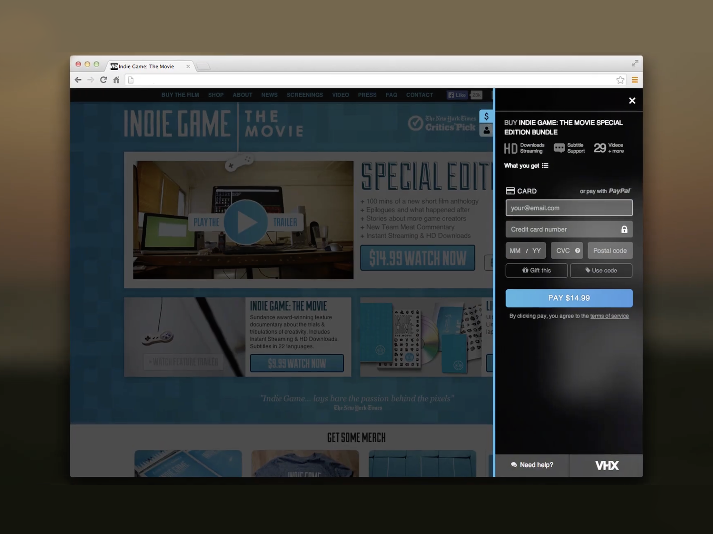

Case studies &
highlights.
Each project represents a distinct design challenge — from inventing new UX patterns for emerging platforms to scaling design systems across a company in transition.

Architecting end-to-end design for Vimeo's OTT distribution product across web, TV, and mobile — giving creators the tools to launch and manage their own streaming channels.

Designing the iOS companion app for a holographic display — entirely new territory requiring first-principles thinking about depth, AI-generated 3D, and hardware state management.

Pioneering the Cloud DVR UX at Boxee — designing recording flows, scheduling interfaces, and social TV features for a living-room product that was ahead of its time. Led to acquisition by Samsung.

Designing VHX's payment and audience-management flows — the infrastructure that let indie filmmakers and creators run their own streaming businesses. These patterns were later absorbed into the Vimeo platform.
Winner of the Stempel Thesis Prize: An annual scholarship awarded to a MICA senior exhibiting exemplary thesis work.